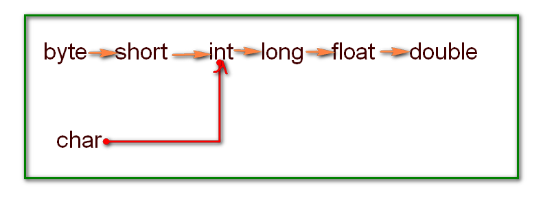
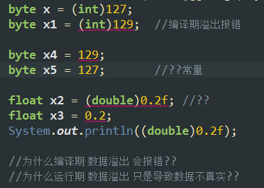
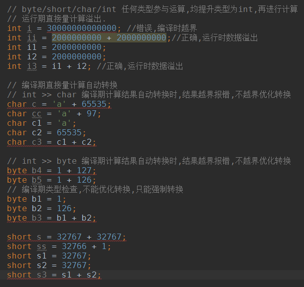

01_java_var_and_basic_type
Mar 1, 2016
目录
- 变量
- 声明
- 初始化
- 命名规则
- 基本数据类型
- 直接量
- float double类型精度
- 不精确计算
- 类型转换
- 数据溢出
变量
声明
1 | int i; |
初始化
1 | i = 666; |
命名规则
- 不能关键字
- 不能数字开头
- 字母/数字/下划线_/美元符$组合
- 严格区分大小写
基本数据类型
byte/short/int/long/float/double/char/boolean/
直接量
1 | int i = 666; //直接量666 可以是 十进制(默认)/八进制/十六进制 |
float/double类型精度
- float/double 在计算机中以科学计数法表示;
- float: 4字节,1bit符号位/8bit指数位/23bit有效数字位(即7位十进制有效数字,因此最高精度是7or8位有效数字)
- double: 8字节,1bit/11bit指数位/52bit有效数字位(最高精度15or16位有效数字)
不精确计算问题
- double类型不用于精确计算(可以使用 BigDecimal类)
1
2
3int i = 5/3;
double d = 1.0/3.0;
double dd = 3.0-2.9;
类型转换
- boolean类型和其他基本数据类型不兼容
- 自动转换:范围小>范围大
- 强制转换:范围小<范围大 (注意:数据溢出)
- byte/short/char/int 任何类型参与运算, 均提升类型为int ,再进行计算
- 其他类型间运算,提升到(范围大)类型再进行计算

数据溢出
1 | //变量赋值直接量,编译期,越界报错 |

1 | // byte/short/char/int 任何类型参与运算,均提升类型为int,再进行计算 |
